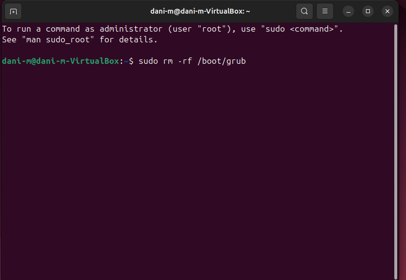
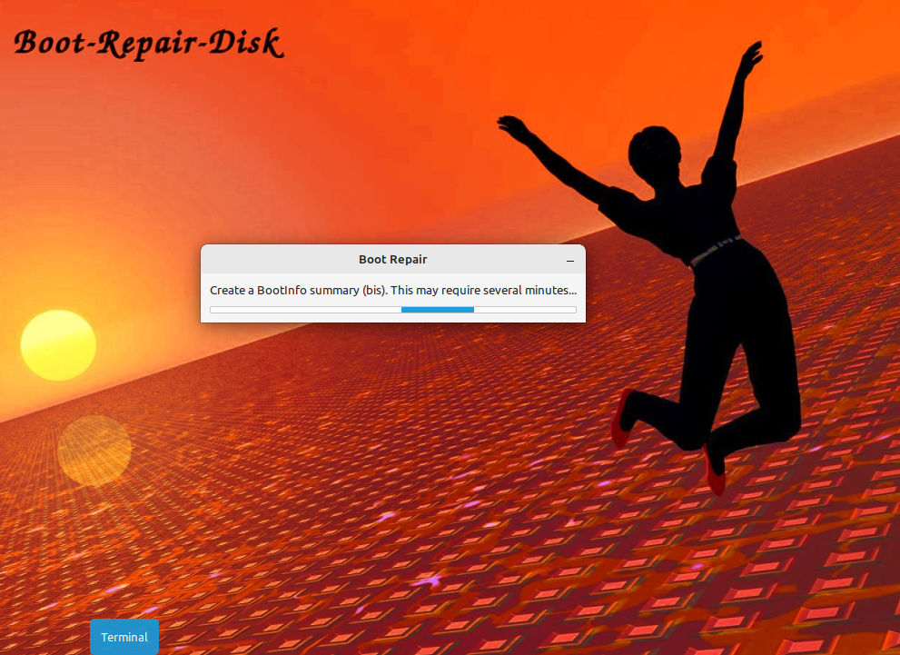
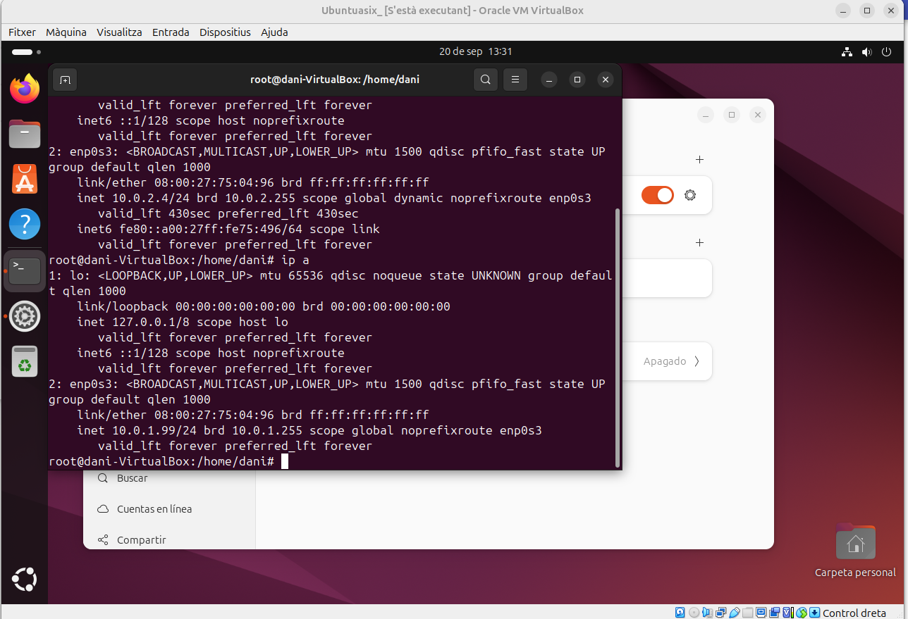

Robert Daniel Miron
1r ASIX
1. Instal·lació sistema operatiu
Aqui afegim la ISO del Ubuntu 24.04.1
 Aqui a la Xarxa de la nostra maquina virtual la fiquem en Xarxa NAT.
Aqui a la Xarxa de la nostra maquina virtual la fiquem en Xarxa NAT.
 Començem la instalació del ubuntu.
Començem la instalació del ubuntu.
Ho deixe com esta i li donem a siguiente.
Selecionem el nostre idioma del teclat i seguim amb la instal·lació.

Instalar Ubuntu i seguim.


 Instal·lació manual i sigüent.
Aqui ve lo mes important les particions del disc creem 4sda com veiem a la imatge en els espai corresponents.
Instal·lació manual i sigüent.
Aqui ve lo mes important les particions del disc creem 4sda com veiem a la imatge en els espai corresponents.
 Fiquem el nostre nom d'usuari i contrasenya
Fiquem el nostre nom d'usuari i contrasenya
 Ja hem acabat de configurar la instal·lació apretem a instal·lar i esperem a que acabi i ja el tindrem instal·lat.
Ja hem acabat de configurar la instal·lació apretem a instal·lar i esperem a que acabi i ja el tindrem instal·lat.
2. Punts de restauració
Contingut Timeshift és una eina molt útil en entorns Linux que permet crear còpies de seguretat del sistema mitjançant la creació de instantànies (snapshots). Aquestes instantànies permeten als usuaris restaurar l'estat del sistema a un punt anterior en cas de problemes, com ara fallades del sistema, errors durant actualitzacions, o configuracions incorrectes. Timeshift està dissenyat per centrar-se en la restauració del sistema, no dels arxius personals, tot i que també pots configurar-lo per incloure'ls.
El primer pas serà tenir una màquina Ubuntu 24 Desktop on obrirem una terminal i farem la comanda sudo apt install timeshift, el qual ens instal·larà l'aplicació Timeshift
Crearem una carpeta i un arxiu de text per a fer les comprovacions
 Entrarem al Timeshift
Entrarem al Timeshift
Seleccionem la primera opció
Afegim la partició a la qual volem crear-li un punt de restauració
Ens sortirà això per defecte i ho modificarem de la manera que necessitem
Aquesta serà la nostra elecció
Li direm que volem incloure tots els fitxers
Finalitzem
Un cop fet això, li diem crear i que s'afegeixi el punt
Esborrem els arxius de prova
A la que hem creat, li direm restaurar
Següent
Ens reinicia la màquina mentre fa el procés
Tornem a obrir la màquina, anem al directori i, com es veu, ja s'han recuperat els arxius
3. LLlicència
-CC(Creative Commons): Contingut digital
-El Programari Lliure: (en anglès, Free Software) es refereix a qualsevol tipus de programari que respecta la llibertat dels usuaris i les comunitats per executar-lo, estudiar-lo, modificar-lo i redistribuir-lo. El terme va ser encunyat per Richard Stallman el 1983 en el marc del projecte GNU i s'ha convertit en un moviment tecnològic i social.
Les quatre llibertats fonamentals del Programari Lliure són:
-Llibertat d'executar el programa
-Llibertat d'estudiar com funciona el programa
-Llibertat de redistribuir còpies
-Llibertat de millorar el programa
4. Gestió d'arrancada
Bootrepair
 RESTARTEEM LA MAQUINA

JA NO ARRANCA PER EL QUE HEM ELIMINAT

AFEGIM LA ISO DEL BOOT REPAIR I INICIEM




5. Configuració xarxa bàsica
Contingut

Fiquem la IP en manual i fiquem el que veiem a la imatge.

Comprovem que la IP esta modificada.

Entrem dins de 01-network-manager-all.yaml i si esta igual que a la imatge ho deixem i si falta alguna cosa la afegim com mostrarem a la imatge

Finalment a de quedar aixi i quan hem acabat guardem i sortim

Mirem si se a modificat el archiu i ja haurem acabat
6. Instal·lacions de programari
Per a fer intalacions de programaria a linux el metode a emprar és ulització de comandis com els següents
Instal·lar paquets: suo apt-*get install nom_de el_paquet
Eliminar paquets: suo apt-*get remove nom_de el_paquet
Buscar paquets: apt-cache search paraula_clau
Obtenir llistes actualitzades dels paquets disponibles: suo apt-*get update
Modernitzar el seu sistema amb les actualitzacions disponibles: suo apt-get dist-upgrade
Veure més comandos i opcions: apt-*get help
 Esta obra está bajo la licencia Creative Commons Atribución 4.0.
Esta obra está bajo la licencia Creative Commons Atribución 4.0.
 Esta obra está bajo la licencia Creative Commons Atribución 4.0.
Esta obra está bajo la licencia Creative Commons Atribución 4.0.